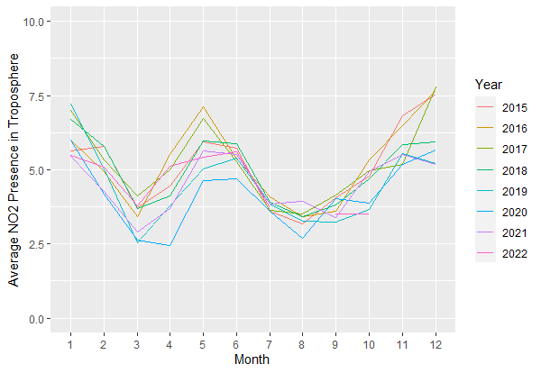

Using Data to Solve Pakistan’s Air Quality Problem
Winter season is upon us, and with it comes the smog. Pakistan and South Asia as a whole, continuously ranked lowest in air quality indices. Air pollution causes millions of deaths every year according to WHO. Unlike developed countries, the resources required to adequately monitor factors contributing to air quality are scarce. Even in developed countries like the USA, these monitors are mainly concentrated in major cities.
To counter this limitation, the HAQAST (Nasa Health And Air Quality Applied Sciences Team), part of the NASA Applied Sciences Program aims to connect earth science experts and NASA Satellite data to solve prevalent issues related to health, environment degradation, air quality etc.
Although satellite data cannot be a true replacement for on-ground measurements, it is a suitable alternative for countries like Pakistan where resources to install on-ground monitors is severely limited. The NASA satellite data is a treasure trove for earth science researchers to try and put forward solutions to the air quality problem that the country is currently facing.
For instance, the following time series plot was created using data from NASA’s global nitrogen dioxide monitoring homepage. In this data, the organization has provided daily median nitrogen presence in the troposphere (lowest layer of the earth’s atmosphere). It can be clearly seen in this graph that Nitrogen Dioxide presence peaks between October and December. This is because the stubble burning process takes place in these months, where farmers burn the residuals after harvesting crops.
While this is common knowledge that stubble burning is a major contributor to smog, these types of analysis are a step towards solving the issue as they help specify the problem quantitatively. Subsequently, whatever solution is implemented to curtail air pollution, benchmarks could be identified and monitored to track progress. This ultimately help policy makers make informed policies.

Reference
Lamsal, L. N., Krotkov, N. A., Vasilkov, A., Marchenko, S., Qin, W., Yang, E.-S., Fasnacht, Z., Joiner, J., Choi, S., Haffner, D., Swartz, W. H., Fisher, B., and Bucsela, E.: OMI/Aura Nitrogen Dioxide Standard Product with Improved Surface and Cloud Treatments, Atmos. Meas. Tech. Discuss., https://lnkd.in/e8H8kQw6, in review, 2020